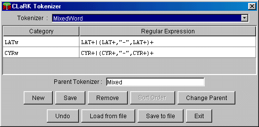

This file contains a short description of the DTD used for saving/loading Tokenizers in ClarkSystem. There is one example XML document which represents the serialization of one Tokenizer from the system.
<!DOCTYPE Tokenizers [
<!ELEMENT Tokenizers (tokenizer)+>
<!ELEMENT tokenizer (name,author?,parent?,so?,Comment?,line+)>
<!ATTLIST tokenizer
type (primitive|normal) "normal"
>
The attribute type of the tokenizer represent the tokenizer type
primitive or normal.
For the primitive tokenizer the so (sort order) element is obligatory.
The normal tokenizer must have a parent element which represents the parent tokenizer
name.
<!ELEMENT name #PCDATA>
<!ELEMENT author #PCDATA>
<!ELEMENT so #PCDATA>
<!ELEMENT parent #PCDATA>
<!ELEMENT Comment #PCDATA>
<!ELEMENT line (cat,value,normalize?)+>
<!ELEMENT cat #PCDATA>
<!ELEMENT value #PCDATA>
<!ELEMENT normalize (normcat,(code,norm)*)><!-- Normalization for the current line -->
<!ELEMENT normcat #PCDATA>
<!ELEMENT code #PCDATA>
<!ELEMENT norm #PCDATA>
Example :
<?xml version="1.0"?>
<!-- This Document is created with the Clark System! http://www.bultreebank.org -->
<Tokenizers>
<tokenizer type="normal">
<name>MixedWord</name>
<author>Clark System</author>
<parent>Mixed</parent>
<line>
<cat>LATw</cat>
<value>LAT+|(LAT+,"-",LAT+)+</value>
</line>
<line>
<cat>CYRw</cat>
<value>CYR+|(CYR+,"-",CYR+)+</value>
</line>
</tokenizer>
</Tokenizers>
